Ce problème peut être résolu par une multitude d’algorithmes.
On présente plusieurs algorithmes qui, étant donnée une liste L, la modifient pour en trier les éléments (comme le fait la méthode L.sort() vue au Cours 4).
Pourquoi trier ?
Au dernier cours, on a vu que la recherche binaire nécessite une liste triée et a une complexité \(\Theta(\log n)\), bien meilleure que la recherche linéaire \(\Theta(n)\).
Si on va souvent chercher dans une liste, il vaut mieux la trier d’abord !
Exemples de structures triées :
Dictionnaires (les vrais) ordonnés par ordre alphabétique des mots
Annuaires ordonnés par ordre alphabétique des noms
Listes d’étudiants au SAC ordonnés par Sciper…
Tri par sélection : idée
Idée : dans une liste triée, le premier élément est le plus petit, le deuxième est le deuxième plus petit, etc.
Pour trier la liste, on va rechercher le plus petit élément et le mettre à la bonne place (en première position) ; puis rechercher le deuxième plus petit élément (le plus petit parmi ceux qui restent) et le mettre en deuxième position, etc.
On fait donc grandir une sous-liste triée, en insérant à chaque fois le minimum des éléments restants à la fin de cette sous-liste.
def tri_par_selection(L): n =len(L)for i inrange(n): m = L[i] m_index = ifor j inrange(i +1, n):if L[j] < m: m = L[j] m_index = j L[i], L[m_index] = L[m_index], L[i]L = [0, -3, 2, 4, 2]tri_par_selection(L)print(L)
[-3, 0, 2, 2, 4]
La boucle intérieure est l’algorithme du maximum du dernier cours, avec < au lieu de > : elle cherche le minimum de L[i], …, L[n-1].
Tri par sélection : correctitude
def tri_par_selection(L): n =len(L)for i inrange(n): m = L[i] m_index = ifor j inrange(i +1, n):if L[j] < m: m = L[j] m_index = j L[i], L[m_index] = L[m_index], L[i]
Invariant de boucle (boucle extérieure) : Au début de l’itération i, L[0], …, L[i-1] sont les i plus petits éléments de la liste donnée en entrée, triés.
Initialisation : Au début de l’itération i = 0, il n’y a encore aucun élément à placer : l’invariant est vrai.
Maintenance : Supposons l’invariant vrai au début de l’itération i. La boucle intérieure trouve le minimum m de L[i], …, L[n-1] : par l’invariant, c’est le \((i+1)\)ème plus petit élément. L’échange le place en position i : L[0], …, L[i] sont les i + 1 plus petits éléments, triés.
Terminaison : À la sortie de la boucle (au début de l’itération i = n, qui n’aura pas lieu), L[0], …, L[n-1] sont les n plus petits éléments, triés : la liste entière est triée.
Tri par sélection : complexité
def tri_par_selection(L): n =len(L)for i inrange(n): # n itérations ...for j inrange(i +1, n): # n - i - 1 itérations ...
Nombre total d’itérations de la boucle intérieure (comme pour la somme maximale au Cours 7) : \[(n-1) + (n-2) + \cdots + 1 + 0 = \frac{n(n-1)}{2}.\] Le temps de parcours a donc complexité \(\Theta(n^2)\).
Y a-t-il une distinction entre le pire des cas et d’autres cas ?
Non : la boucle intérieure parcourt toujours L[i+1], …, L[n-1], quelle que soit l’entrée. Le tri par sélection a toujours complexité \(\Theta(n^2)\).
Tri par insertion : idée
Idée : trier une liste comme on trie une main à un jeu de cartes.
On fait grandir une sous-liste triée, en insérant un élément à la fois à la bonne place dans cette sous-liste.
Contrairement au tri par sélection, L[0], …, L[i-1] ne sont pas forcément les \(i\) plus petits éléments, mais ce sont les mêmes \(i\) éléments qu’au départ, triés entre eux.
Invariant de boucle (boucle extérieure) : Au début de l’itération i, L[0], …, L[i-1] sont les mêmes i éléments qu’au départ, mais triés.
Initialisation : Au début de l’itération i = 0, il n’y a aucun élément : l’invariant est vrai.
Maintenance : Supposons l’invariant vrai au début de l’itération i. La boucle while fait descendre L[i] par échanges successifs tant qu’il est plus petit que son voisin de gauche : elle l’insère à sa bonne place parmi L[0], …, L[i-1], qui sont triés. Ainsi, L[0], …, L[i] sont les mêmes éléments qu’au départ, triés.
Terminaison : À la sortie de la boucle (au début de l’itération i = n, qui n’aura pas lieu), L[0], …, L[n-1] sont les mêmes éléments qu’au départ, triés.
Tri par insertion : complexité
def tri_par_insertion(L): n =len(L)for i inrange(n): # n itérations j = iwhile j >0and L[j] < L[j -1]: # au plus i itérations L[j], L[j -1] = L[j -1], L[j] j = j -1
Au pire des cas, la liste est triée en ordre décroissant (par exemple [4, 3, 2, 1, 0]) : la boucle while itère alors exactement \(i\) fois à l’étape \(i\), soit au total \[0 + 1 + \cdots + (n-1) = \frac{n(n-1)}{2} \quad \text{itérations : complexité } \Theta(n^2).\]
Y a-t-il une distinction entre le pire des cas et d’autres cas ?
Oui : la boucle while s’arrête dès que L[i] est à sa bonne place. Si la liste est déjà triée, elle n’itère jamais, et le tri par insertion a complexité \(\Theta(n)\).
Peut-on faire mieux que \(\Theta(n^2)\) ?
Le tri par sélection et le tri par insertion ont tous les deux une complexité \(\Theta(n^2)\).
Peut-on faire mieux ?
\(\Longrightarrow\) Oui, en utilisant un algorithme récursif : le tri par fusion.
La structure
On suppose qu’on a accès à un algorithme rapide de fusion, qui, étant donné deux listes triées, les fusionne en une seule liste triée.
Avec un tel algorithme, on peut écrire l’algorithme de tri récursif suivant : avec une liste de taille \(n\), on
divise la liste en deux sous-listes de taille (approximativement) \(n/2\),
trie récursivement chaque sous-liste,
fusionne les sous-listes triées pour obtenir une version triée de la liste initiale.
Le tri des sous-listes se fait récursivement, et les appels récursifs s’arrêtent pour les listes de taille \(\leq 1\) (cas de base).
Exemple pas-à-pas
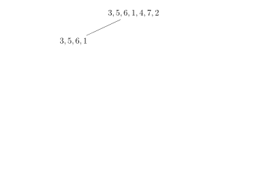
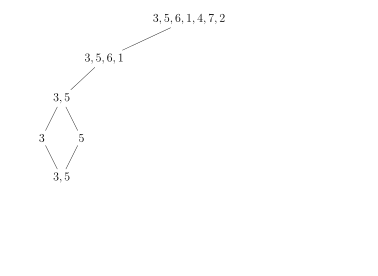
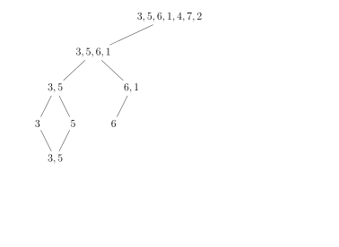
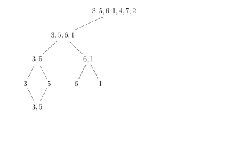
Tri par fusion : code
L’algorithme de tri par fusion est écrit de manière récursive : il trie L[bas], …, L[haut].
def tri_par_fusion(L, bas, haut):if haut - bas >0: milieu = (bas + haut) //2 tri_par_fusion(L, bas, milieu) tri_par_fusion(L, milieu +1, haut) fusion(L, bas, milieu, haut)
Remarque. Ici, le cas de base, c’est de ne rien faire ! Une liste de taille \(\leq 1\) est déjà triée.
Tri par fusion : Exemple A
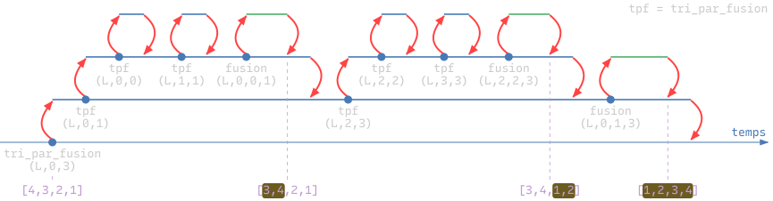
Tri par fusion : Exemple B
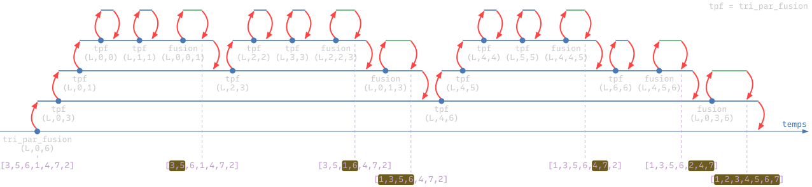
Fusion : code
On copie d’abord les deux moitiés : copie(L, debut, fin) retourne une nouvelle liste contenant L[debut], …, L[fin]. Puis on remplit L[bas], …, L[haut] en prenant à chaque fois le plus petit des premiers éléments pas encore copiés de L1 et de L2.
Remarque.float('inf') est l’infini : il est plus grand que tout nombre. Placé à la fin de L1 et de L2, il évite de sortir d’une liste dont on a déjà copié tous les éléments : on prend alors toujours dans l’autre.
Correctitude (idée)
La correctitude de tri_par_fusion(L, bas, haut) découle de la correctitude de fusion et de la correctitude de tri_par_fusion sur des instances plus petites (cas de base : une liste de taille \(\leq 1\) est déjà triée).
La correctitude de fusion découle de l’invariant de boucle suivant pour la boucle for : au début de l’itération i, L[bas], …, L[i-1] sont les i - bas plus petits éléments de L1 et L2, triés ; et L1[L1_index] et L2[L2_index] sont les plus petits éléments de leurs listes respectives qui n’ont pas encore été copiés dans L.
fusion a la complexité \(\Theta(n) + \Theta(n) = \Theta(n)\).
Pour simplifier la suite, on suppose qu’il existe une constante \(c > 0\) telle que le temps de parcours de fusion est exactement \(cn\).
Complexité de tri_par_fusion : récurrence
Soit \(T(n)\) le temps de parcours, au pire des cas, de tri_par_fusion pour une entrée de taille \(n = \text{haut} - \text{bas} + 1\). On suppose que \(n = 2^k\), où \(k > 0\) est un entier.
def tri_par_fusion(L, bas, haut):if haut - bas >0: milieu = (bas + haut) //2 tri_par_fusion(L, bas, milieu) # T(n/2) tri_par_fusion(L, milieu +1, haut) # T(n/2) fusion(L, bas, milieu, haut) # cn
On a alors la relation de récurrence :
\[\boxed{T(n) = 2T(n/2) + cn.}\]
Arbre de récurrence
\[T(n) = 2T(n/2) + cn\]
En développant le calcul de \(T(n)\) à l’aide de cette formule, on obtient la structure d’arbre suivante :
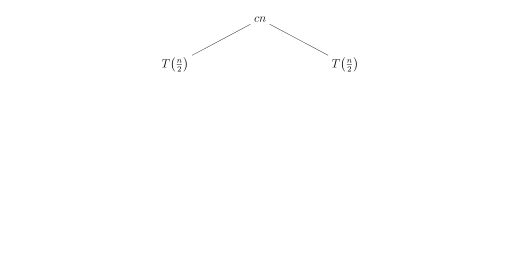
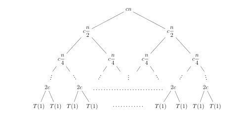
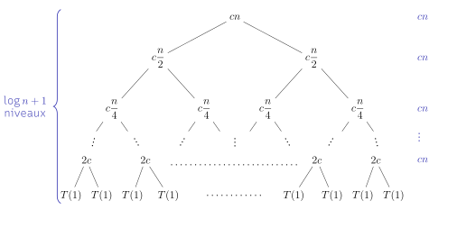
En additionnant toutes ces valeurs ligne par ligne, on obtient \(T(n) = cn \cdot \log n + T(1) \cdot n\).
Résultat : \(\Theta(n \log n)\)
\[T(n) = cn \cdot \log n + T(1) \cdot n\]
\(cn \log n\) est le terme dominant, donc tri_par_fusion a complexité \(\Theta(n \log n)\).
Plaçons-le dans la hiérarchie des complexités :
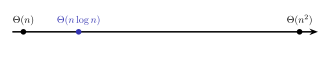
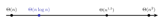
\(\Theta(n \log n)\) est strictement meilleur que \(\Theta(n^2)\) : le tri par fusion est asymptotiquement plus rapide que le tri par sélection et le tri par insertion.
Le passage de \(\Theta(n^2)\) à \(\Theta(n \log n)\) est significatif : pour \(n = 10^6\), on passe de \(10^{12}\) à environ \(2 \times 10^7\) opérations.
Comparaison des algorithmes de tri
Algorithme
Complexité
Mémoire supplémentaire
tri_par_selection
\(\Theta(n^2)\)
\(\Theta(1)\) (sur place)
tri_par_insertion
\(\Theta(n^2)\)
\(\Theta(1)\) (sur place)
tri_par_fusion
\(\Theta(n \log n)\)
\(\Theta(n)\)
tri_par_selection et tri_par_insertion trient sur place, alors que tri_par_fusion a besoin d’un espace de travail \(\Theta(n)\) en mémoire (les copies L1 et L2).
La constante qui se cache dans la notation \(\Theta(\cdot)\) pour tri_par_fusion est assez grande. En pratique, pour de petites valeurs de \(n\), tri_par_insertion est l’algorithme à préférer.
L’algorithme utilisé par la méthode sort et la fonction sorted de Python est Timsort : c’est un algorithme hybride basé sur le tri par fusion et le tri par insertion.
Optimalité du tri par fusion
Tous les algorithmes que nous avons vus sont basés sur la comparaison de paires d’éléments.
On peut prouver que tout algorithme basé sur la comparaison de paires d’éléments nécessite au moins de l’ordre de \(n \log n\) comparaisons pour trier une liste de taille \(n\).
Le tri par fusion est donc asymptotiquement optimal parmi les algorithmes qui comparent des paires d’éléments.
Si on a plus d’informations sur les données de la liste, par exemple si on sait que tous les éléments sont des entiers entre 0 et une constante \(K\), on peut trier en \(\Theta(n)\) (sans comparer d’éléments).